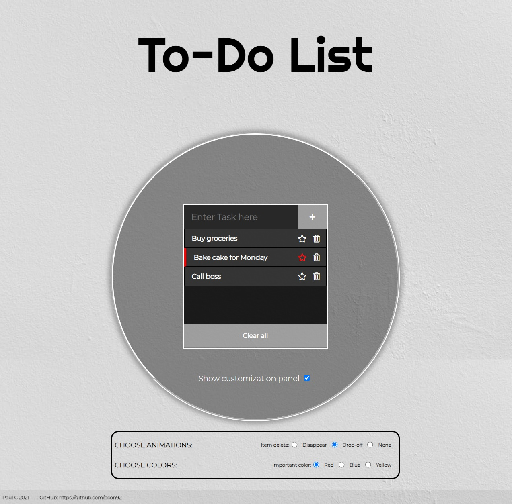
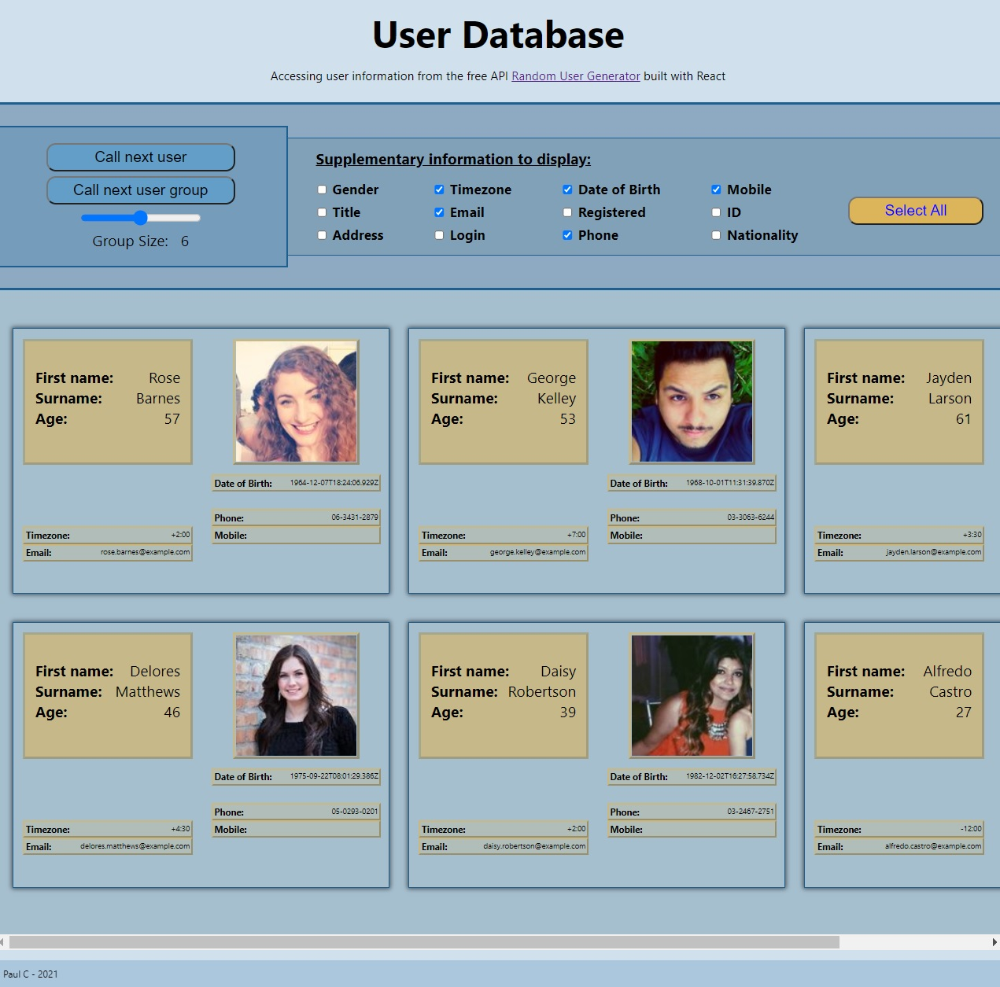
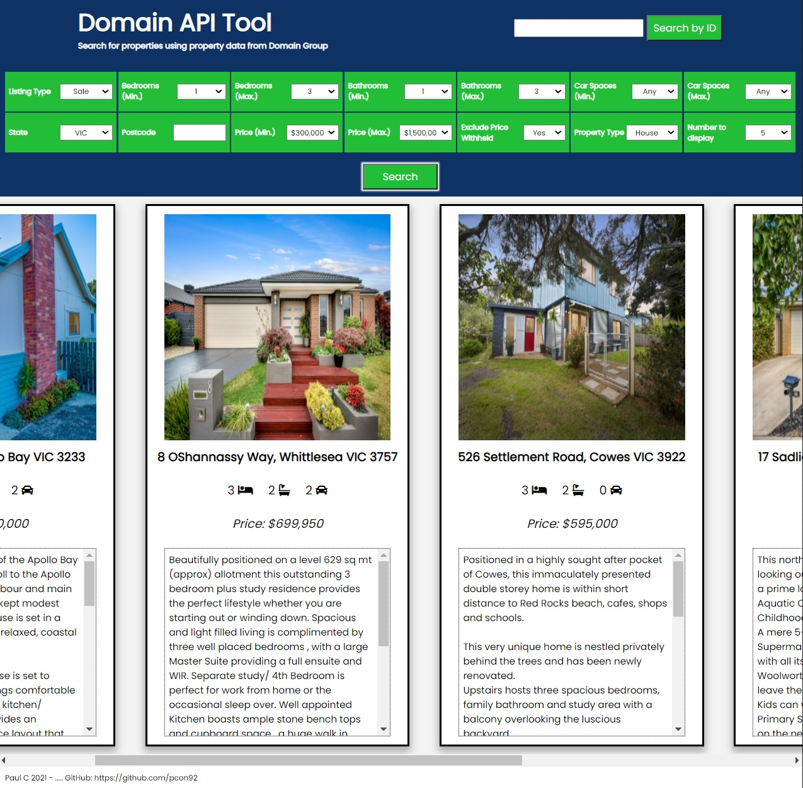

To-Do List
HTML | CSS | JavaScript

A simple To-Do List application.
I picked this project to practice creating elements and deleting them from the DOM and to practice using CSS animations.
Some challenges I faced were trying to fix an abrupt transition with the 'Show Customization Panel' label after the mouse had left
the specificied hover area. Instead of using :hover I decided to add an event listener that would track mouseenter
and mouseleave.
I have plans to expand this application to allow the user to save their items on a local database before closing the application.
User Info from API
HTML | CSS | JavaScript | React

A tool to access User Information from the free, open source api "randomuser.me", built with React.
This project allowed me to focus on two new skills: using React to build an application and to access information from an API using fetch GET.
Initially I found it difficult to navigate through the JSON file provided by the API to access the specific information I needed.
I also found it challenging to include a right margin on the last column of information cards that would appear. I discovered this was due
to flex: wrap ignoring the padding and margin of the elements, so the easiest way around this was to create a pseudoelement after
the last cards on the right.
Domain API Tool
HTML | CSS | JavaScript

A tool to search for properties in Australia using the Domain Group API.
After some experience in API use with my previous project I found this API much more difficult to navigate - I needed
to learn how to use fetch POST requests and the documentation was not as clear.
I had considered building this with React however I wanted to try first to build it with vanilla JavaScript and then to rebuild it
with React at a later date to practice how to convert projects between the two and to appreciate the benefits of the modularity of React when building a
larger JavaScript application.